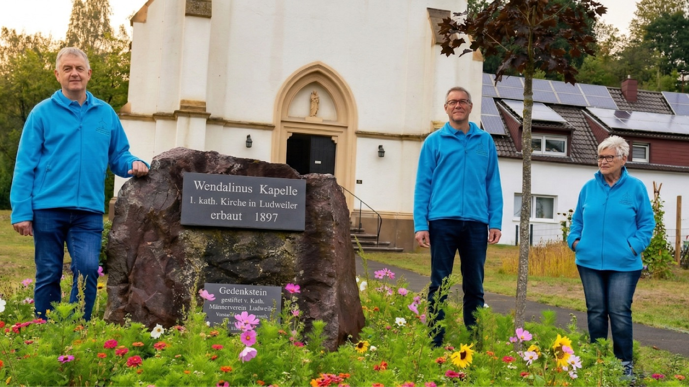

Der Verein
Bewahren und Beleben — bürgerschaftliches Engagement für ein spätgotisches Baudenkmal.
Auftrag und Zweck
Der Kernauftrag des Vereins lässt sich in zwei Worten zusammenfassen: „Bewahren und Beleben“. Gegründet wurde die Patengemeinschaft, um die spätgotische Kapelle als kulturelles und religiöses Zentrum zu erhalten.
„Der Verein wurde gegründet, um die finanzielle und ideelle Trägerschaft für die Instandhaltung der Kapelle zu sichern, da das Gebäude ohne bürgerschaftliches Engagement dem Verfall preisgegeben wäre.“
Hauptziele
- Denkmalerhalt — fortlaufende Restaurierung und Instandhaltung des Sandsteinmauerwerks
- Kultureller Ort — Konzerte, Lesungen und Ausstellungen in der Kapelle
- Gemeinschaft stärken — Förderung des sozialen Zusammenhalts in Ludweiler durch regelmäßige Veranstaltungen
Struktur
Der Verein wird von einem Vorstand engagierter Bürgerinnen und Bürger aus Ludweiler und der Umgebung getragen. Dieser Vorstand ist erste Anlaufstelle für Mitglieder, Spenderinnen und Spender sowie Behörden.

Unterstützernetzwerk
Der Verein arbeitet mit der Stadt Völklingen, ortsansässigen Handwerksbetrieben, kirchlichen Institutionen und privaten Großspendern zusammen. Interessierte Partner sind eingeladen, Möglichkeiten für Sponsoring oder Fördermitgliedschaften zu erkunden.
Kontakt
- Anschrift
- Lauterbacher Straße 148A, 66333 Völklingen-Ludweiler
- info@wendalinuskapelle-ludweiler.de